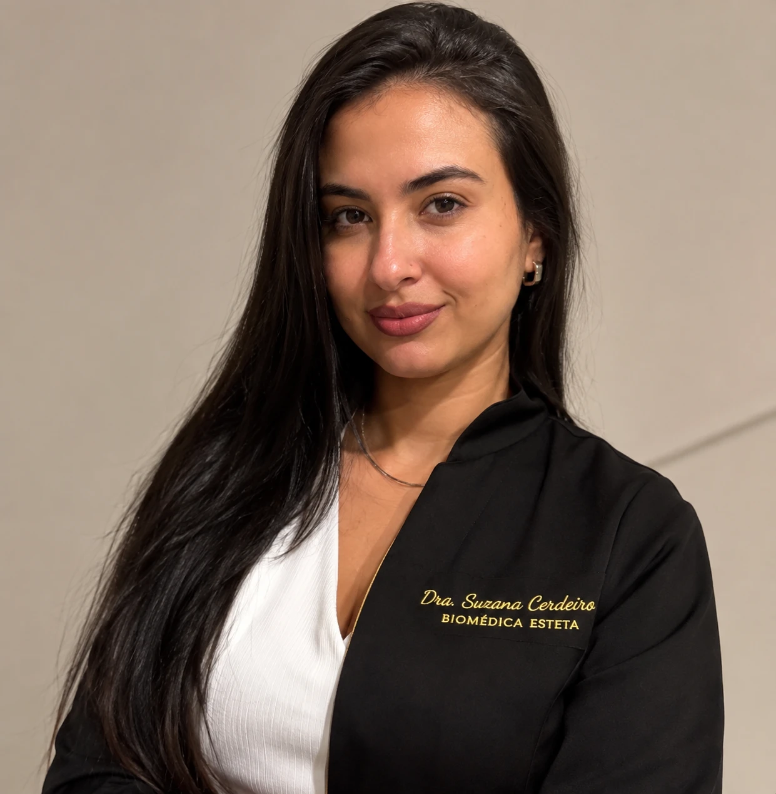

Lábios
Um olhar para o contorno, a proporção e a harmonia dos lábios, respeitando as características de cada rosto.
Conversar sobre lábiosDRA. SUZANA CERDEIRO
Estética avançada com um olhar atento ao que faz você ser única.
Agendar minha avaliação Conhecer o trabalhoUm plano pensado para a sua individualidade.

01 / A PROFISSIONAL
Sou a Dra. Suzana Cerdeiro, biomédica especialista em estética avançada pela UFRJ.
Acredito em um cuidado que começa pela escuta. Conhecer suas expectativas e respeitar suas características é o ponto de partida para construir um plano individualizado.
02 / ESPECIALIDADES
Conheça as áreas de cuidado e converse sobre suas expectativas em uma avaliação.
Um olhar para o contorno, a proporção e a harmonia dos lábios, respeitando as características de cada rosto.
Conversar sobre lábiosPlanejamento individualizado para o cuidado com as linhas de expressão e o equilíbrio da expressão facial.
Conversar sobre toxinaAvaliação dos vasinhos aparentes e das possibilidades de cuidado, de acordo com as necessidades de cada pessoa.
Conversar sobre vasinhos03 / GALERIA
Registros do trabalho da Dra. Suzana. Toque em uma imagem para ver a comparação ampliada.
Cada pessoa tem características e respostas próprias. Os registros não representam garantia de resultado.
04 / SEU PRIMEIRO PASSO
Escolha um assunto para iniciar sua conversa com a Dra. Suzana.
A avaliação é o primeiro passo para entender suas expectativas e possibilidades de cuidado.
Continuar no WhatsApp05 / DÚVIDAS
Use um dos botões de WhatsApp do site para conversar diretamente com a Dra. Suzana e consultar a disponibilidade.
Não. Você pode começar contando o que deseja valorizar. A avaliação ajuda a definir um plano adequado às suas características.
Os valores, horários e informações sobre o atendimento são fornecidos pelo WhatsApp.